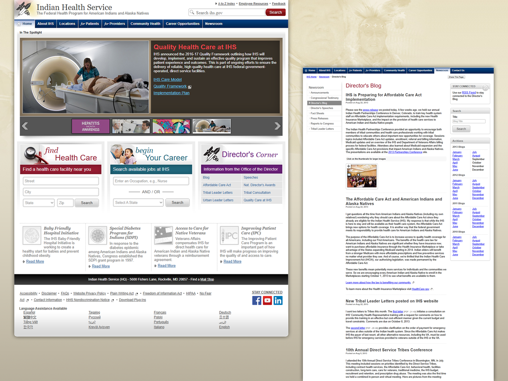
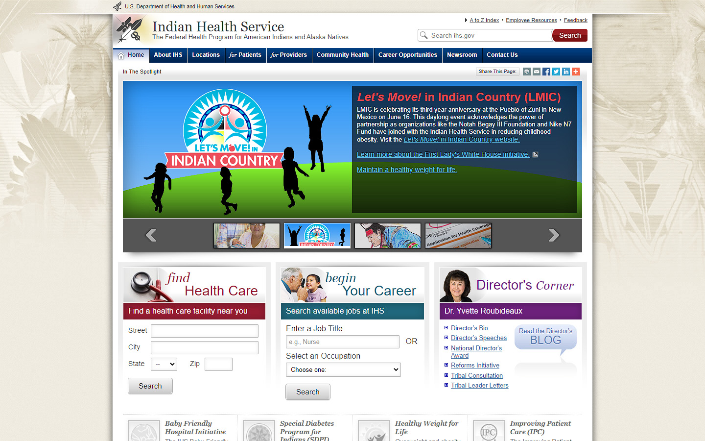
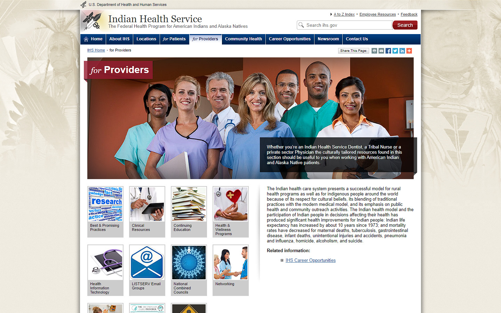
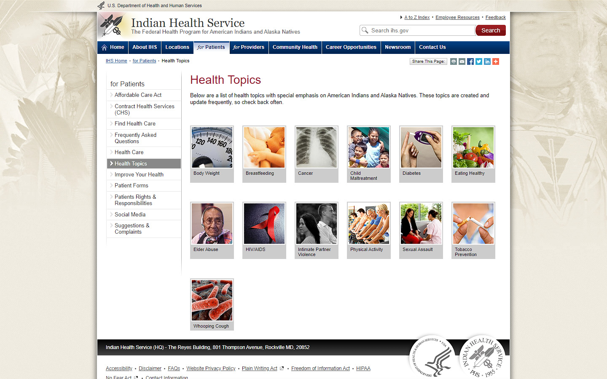
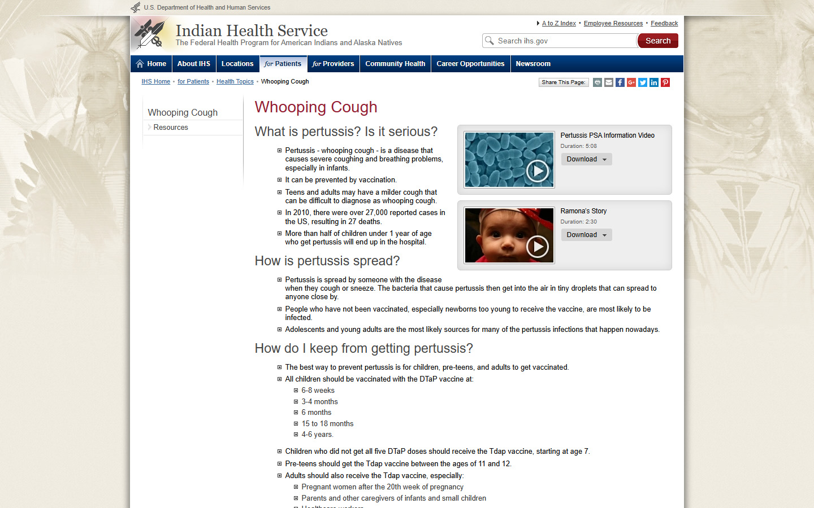
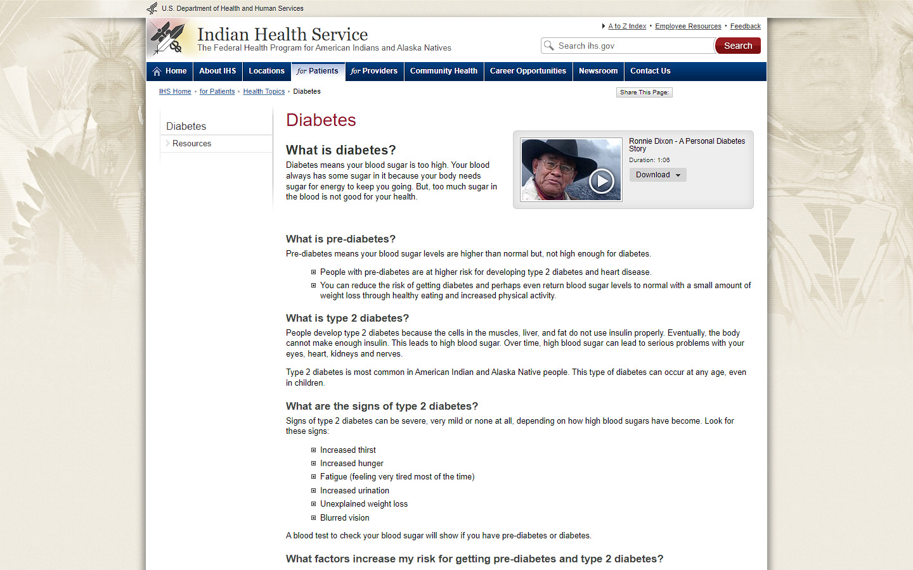
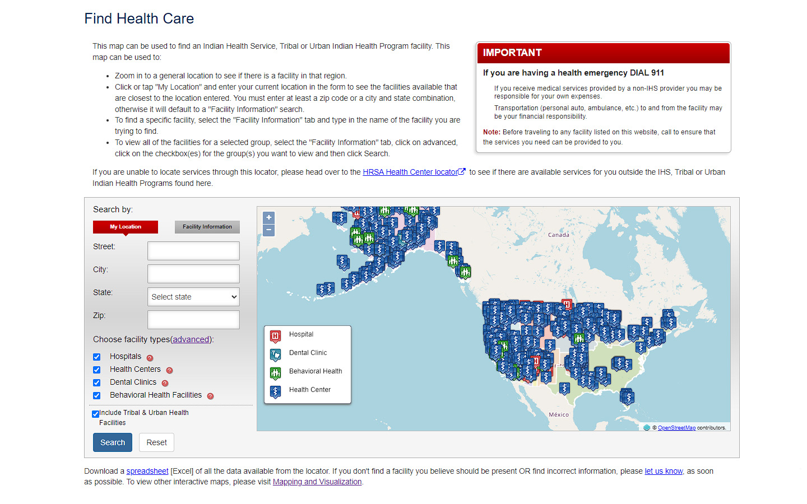

Case Study • IHS / Sandia Labs
2004-2015 • Health & Human Services

Case Study • IHS / Sandia Labs
2004-2015 • Health & Human Services

Desc:Design & development of internal & external web systems
Role:Senior UX/UI designer and developer
Team:Cross-functional product team
Contract:CNI • Phacil
Timeline:2004-2015
As a federal contractor at the Indian Health Service (IHS)—a division of the U.S. Department of Health and Human Services (HHS)—for 11 years, I led and contributed to diverse, cross-functional product teams. My contributions spanned small-scale feature enhancements, custom graphics creation, and large-scale, nationally recognized digital redesigns.
Following an initial optimization of ihs.gov in 2009, I spearheaded a comprehensive redesign starting in 2010. This initiative launched just as the federal government began mandating Section 508 compliance for public-facing digital assets. The objective was to deliver a visually engaging, high-impact user experience while strictly adhering to 100% accessibility standards.
By pairing robust backend architectures with cutting-edge front-end frameworks—including custom mobile layouts built on jQuery Mobile—I engineered a sustainable design framework that supported the agency for over a decade.
Conducted and translated user research insights into comprehensive wireframes and user flows. Led the creative direction to establish a cohesive visual identity aligned with agency design standards.
Designed graphics and built high-fidelity interactive prototypes. Wrote clean JavaScript interactions and foundational CSS to accelerate engineering handoffs.

01HOMEPAGE REDESIGN • Complete UX/UI design and front-end development. Features custom logo branding, unified global navigation, interactive graphic assets, and accessible JavaScript-driven animations.

02CORE PORTALS & TEMPLATES • Responsive layout architecture designed and hand-coded for complex user paths. Implements cross-browser styling and accessible structural grids optimized for clinical providers.

03INFORMATION ARCHITECTURE • Section-level interface layouts built to streamline data-heavy content tables. Features 100% Section 508-compliant hierarchical navigation frameworks.

04ACCESSIBLE MULTIMEDIA • Custom-engineered HTML5/CSS3 video player featuring strict WCAG and Section 508 compliance. Coded with accessible keyboard controls, screen-reader focus handling, and synchronized captions.

05CAMPAIGN & DRILL-DOWN DESIGN • Deep, multi-level microsite layout supporting national health initiatives. Includes bespoke healthcare icon sets, vector graphic design, and performant UI animations.

06HEALTHCARE FACILITY LOCATOR • Full-stack UX/UI design and interactive development. Features a highly usable custom map interface optimized for programmatic geography lookup and tactile mobile interactions.
Parallel to public initiatives, I architected and hand-built dozens of custom internal websites and restricted portals supporting critical American Indian and Alaska Native health initiatives. Developed prior to the widespread adoption of modern Content Management Systems (CMS), these standalone platforms required bespoke front-end engineering and rigorous information architecture. I took full ownership of translating complex healthcare workflows into clean, secure, and accessible internal systems that empowered agency staff and healthcare providers nationwide.
Want to see how this technical expertise can translate to your next project?